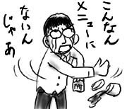

というわけで誕生日は家に引きこもっていたのですが，今日，会社に行こうと部屋の外に出てみると，扉が冬毛に生え変わっていました．
いつの間に！(気づかなさすぎ)．こういうのってこっちじゃ普通なんですかね？
というわけで誕生日は家に引きこもっていたのですが，今日，会社に行こうと部屋の外に出てみると，扉が冬毛に生え変わっていました．
いつの間に！(気づかなさすぎ)．こういうのってこっちじゃ普通なんですかね？
1つ年を取りました．まさか異国で誕生日を迎える日が来るとは思ってもみなかったので，なかなかに感慨深い気はします．
実家から誕生日祝いのメールが届いていました．
ところで、そちらは大変忙しいようですが、うまく気分転換しストレスをためないようにしてください。睡眠をしっかりとるように心がけましょう。食事も栄養に気をつけてください。忙しいと思いますが長期間連絡がないと心配するので、定期的にメールをしてください。
全部こまめに実行していたら，余計ストレスが溜まりそうです．
今日は誕生日なので魚を買って赤飯と魚でお祝いをしておきます。
…ちっとも嬉しくありません！高度な嫌がらせですか？
土曜日だけど午後から出勤してました．
休日に何の予定もなく，母国から遠く離れた地で部屋に引きこもっていると，すぐに頭が(以下略)．
同僚のDuyと昼飯のために外出しました．
彼の車に乗り込むと，なぜか味付け海苔が無造作に置かれています．
「朝ご飯かい？」
「いや，スナックさ」
「しかも日本製だね」
「いろいろ試したけど日本製のが一番うまいね．1つ食うかい？」
「いただくよ．ゲ，これは駄目だ！湿気てるよ！缶かタッパーに保管しないと！」
「なんだって！道理で朝はパリパリなのに，夜には妙に柔らかくなってると思った！」
会社に帰って来た後，Duyは机の引き出しからも味付け海苔を取り出し，「これもタッパーに入れて保管しないと」と言ってました．なぜそんなあちこちに味付け海苔が．
なんというか，飽きません．
出勤してみると，昨日設定したHDDは，他の人の手違いで全部白紙になってたよ！
…全部やり直しました．どうせなら日曜日もやり直したいです．
日曜日だけど午後から出勤してました．
休日に何の予定もなく，母国から遠く離れた地で部屋に引きこもっていると，すぐに頭がおかしくなってくるので，仕事でもなんでも外出予定は大歓迎ですよね(誰にでもなく問いかけるように)．
とにもかくにも，まずは腹ごしらえということで，近所のFAT BURGERまで出かけます．このFAT BURGER，カリフォルニアではIN N' OUTバーガーに次いでうまいという噂なのですが，大抵のガイドブックでお薦めされていて，とりあえず行っておけ！という感じのIN N' OUTバーガー(言うなれば標準入出力)に比べて，あまりにも知名度がなさすぎるところが，逆に僕のツボを刺激します(悪性)．
FAT BURGERは，過去に２回ほど挑戦したのですが，どちらも頼んだ物がちゃんと出て来ませんでした．バーガーにチリソースを追加するのが僕の望みなのですが，一度目はチリソースの代わりにチーズが挟まっていましたし，2回目はどこでどうなったのか，チリソース以外の物(レタス，トマトなど)が一切省かれて単なる肉パンになっていました．果たして三度目の正直となるでしょうか．
結果，普通のバーガーとカップスープ(チリ味)が手渡されました．チリカップスープ(チリ味)なんてメニューのどこにも書いてないじゃないか．僕はからかわれているのか．
しょんぼり出社した後は，月曜からの実験に必要なものをHDDに一通りインストール(異様に時間がかかる)し，設定を済ませてから，とぼとぼと帰宅しました．